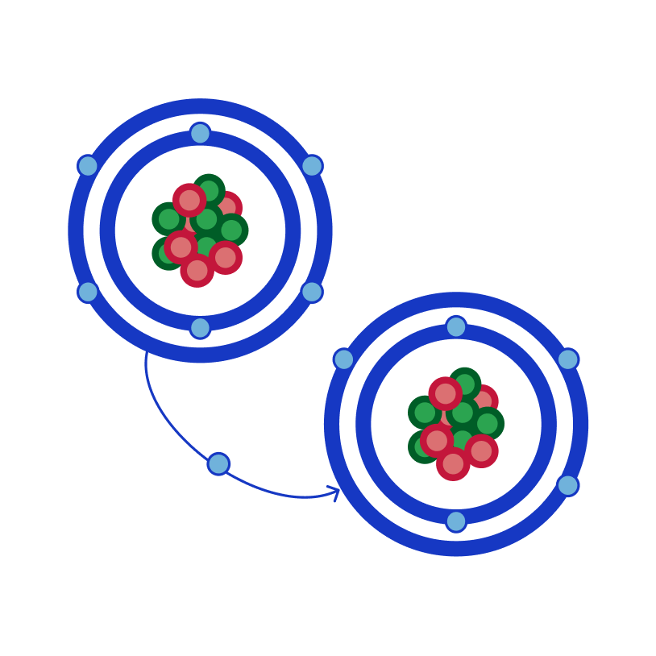
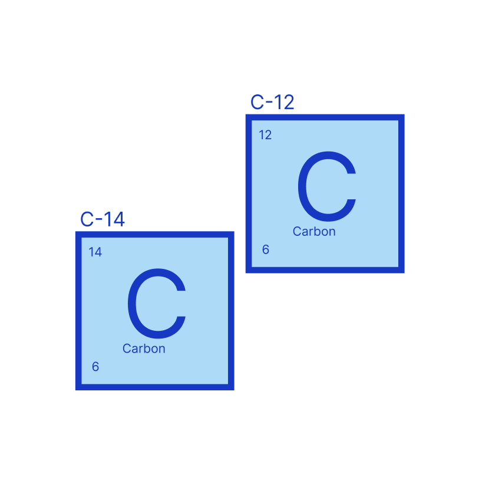
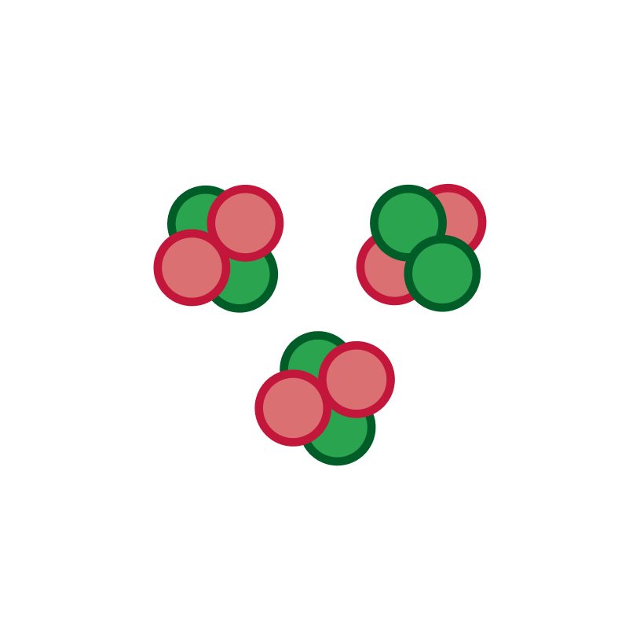
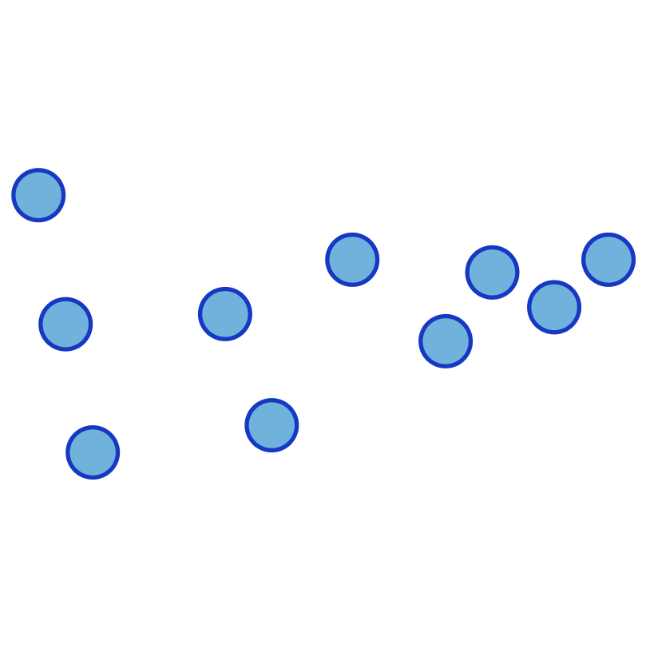
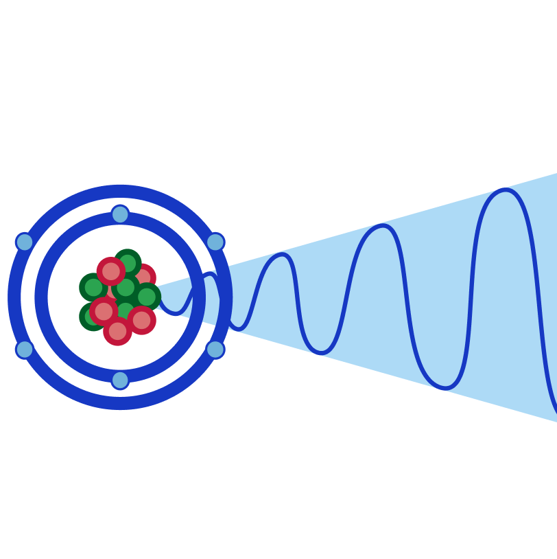

Ionisation is the transfer of electrons between atoms. If an atom loses electrons, it becomes positively charged, since it is losing its negative charge. If an atom gains electrons, it becomes negatively charged, as it is gaining more negative charge.
This creates positively charged ions (cations) and negatively charged ions (anions).

Isotopes are versions of the same element, where they have the same number of protons, but a different number of neutrons. This affects their atomic mass, but does not affect their chemical properties as much.
An example of isotopes are carbon-14 and carbon-12, where carbon-12 has an atomic mass of 12 with 6 neutrons, and carbon-14 has an atomic mass of 14 with 8 neutrons.

Alpha particles are hydrogen nuclei, meaning they are made up of two neutrons and two protons.
Their properties are:

Beta particles are small, high-energy electrons, emitted from atoms.
Their properties are:

Gamma rays are electromagnetic waves, similar to light, but with a higher frequency and shorter wavelengths. When high energy nuclei emit energy, it is in the form of gamma rays.
Their properties are: